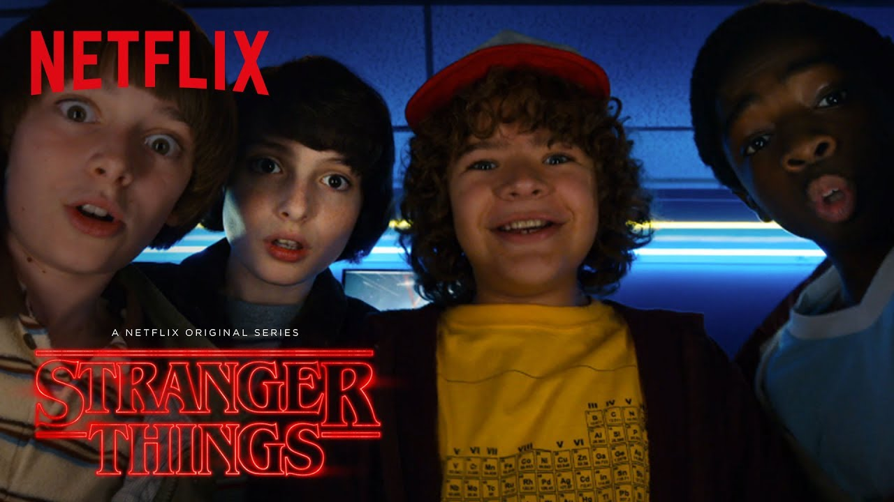
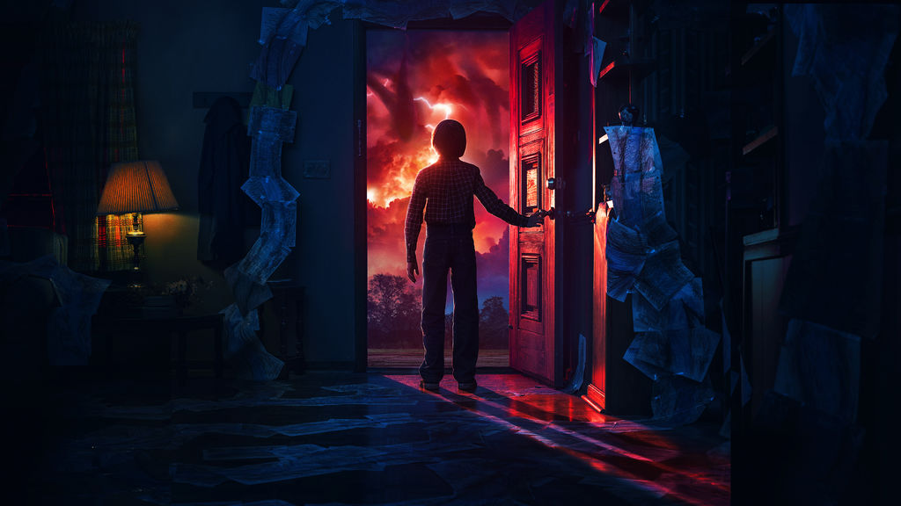
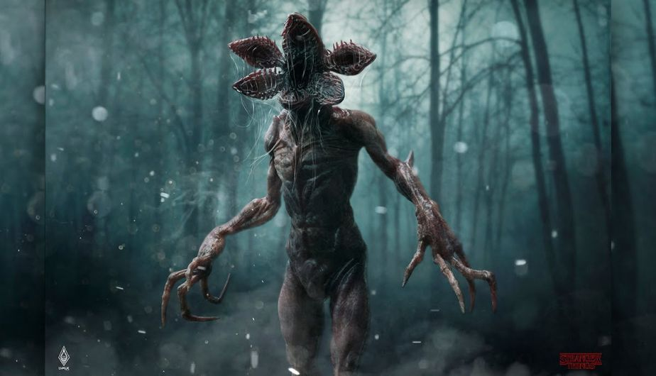

Es una serie estadounidense de ciencia ficción creada por Netflix. Escrita y dirigida por los hermanos Matt y Ross Duffer, con Shawn Levy como productor ejecutivo. Se estrenó en Netflix el 15 de julio del 2016, con muy buena crítica por parte de la prensa especializada, quienes elogian la interpretación, caracterización, ritmo, atmósfera y el claro homenaje al Hollywood de los años 80; con claras referencias a películas de Steven Spielberg, John Carpenter, Stephen King, Rob Reiner y George Lucas. La historia se sitúa en el condado Hawkins de Indiana durante los años 80, donde un niño de 12 años llamado Will desaparece misteriosamente. Al mismo tiempo, una niña con poderes telequinéticos intentará ayudar a los amigos del niño Mike, Dustin y Lucas en su intento de encontrarlo.

Sinopsis
La historia arranca el 6 de noviembre de 1983, en la ciudad de Hawkins, Indiana, cuando Will Byers, de 12 años de edad, tras pasar el día jugando con sus amigos a Dungeons & Dragons, desaparece misteriosamente al regresar a casa. Su madre, Joyce, desesperada, comienza la búsqueda de Will, mientras el jefe de policía Hopper comienza a investigar por su cuenta. Poco después de la desaparición de Will, una misteriosa niña, Eleven, con extrañas habilidades aparece en la casa de Mike. Pero, en el desarrollo de la investigación descubrirán que no sólo tendrán que enfrentarse a una misteriosa organización del gobierno, sino a siniestras fuerzas que planean acabar con todos.

Renovación
El día 31 de agosto de 2016, Netflix anunció a través de su canal en Youtube la renovación de Stranger Things para una segunda temporada que se estrenó el 27 de octubre de 2017. El críptico teaser adelanta que los nueve episodios que conformarán esta segunda temporada transcurrirán durante el otoño de 1984. El 27 de octubre de 2017 se estrenó Stranger Things 2.

Personajes
- Winona Ryder es Joyce Byers, madre de Will y Jonathan Byers. Divorciada de Lonnie, confía en la ayuda de Jonathan, su hijo mayor.
- David Harbour es Jim Hopper, jefe del Departamento de Policía de Hawkins. Hopper se divorció después de que su hija joven murió de cáncer, lo que lo dejó devastado y lo llevó a caer en el alcoholismo.
- Finn Wolfhard es Michael "Mike" Wheeler, hijo de Karen Wheeler y hermano de Nancy. Concienzudo en sus estudios y bastante inteligente, es uno de los amigos de Will Byers. Se enamora de Once.
- Millie Bobby Brown es Once (Eleven), una misteriosa joven con habilidades psicocinéticas y un vocabulario limitado. Se hace amiga de Lucas, Dustin y, especialmente de Mike, de quien se enamora. Se rumorea que ella es Jane Ives, la hija biológica de Terry Ives. Se escapó del Laboratorio de Hawkins donde realizaban experimentos con ella.
- Gaten Matarazzo es Dustin Henderson. Audaz, independiente y carismático, es uno de los miembros del grupo de amigos de Mike.
- Caleb McLaughlin es Lucas Sinclair, parte del grupo de los amigos de Mike, Dustin y Will. Es el cauteloso con Once, pero más tarde se hace amigo de ella.
- Noah Schnapp es William Byers "Will", el hermano menor de Jonathan e hijo de Joyce. Desaparece después de encontrarse con un monstruo que escapó a través de una grieta al otro lado; una dimensión alternativa, descubierta por los científicos del laboratorio de Hawkins.
- Natalia Dyer es Nancy Wheeler, hija de Karen, hermana de Mike Wheeler, amiga de Barb y novia de Steve Harrington, intenta encontrar un equilibrio entre sus valores, emociones y responsabilidades.
- Charlie Heaton es Jonathan Byers, hermano de Will e hijo de Joyce Byers. Considerado un extraño en la escuela, es un adolescente tranquilo y un fótografo aspirante. Tiene sentimientos por Nancy Wheeler.
- Joe Keery es Steve Harrington, el novio de Nancy Wheeler. Un estudiante popular en la escuela secundaria. Él intenta desarrollar una relación estable con Nancy y aislarla de Jonathan.
- Cara Buono es Karen Wheeler, madre de Nancy, Mike y Holly Wheeler.
- Matthew Modine es el Dr. Martin Brenner, el científico a cargo del laboratorio de Hawkins y los experimentos realizados allí. Es manipulador y remoto. Él y su equipo buscan a Once.
- Sean Astin es Robert Newby "Bob", un ex-compañero de colegio de Joyce y Hopper, que ahora dirige el Radio Shack de Hawkins. Inteligente y sabio. Se convierte en el novio de Joyce.
- Sadie Sink es Maxine Hargrove "Max". Es una niña de 12 años, ruda y confiada. Tiene una relación complicada con su hermanastro Billy.
- Dacre Montgomery es William Hargrove "Billy", es un chico engreído. Se rumorea que en su antiguo colegio mató a alguien. Es de naturaleza violenta e impredecible.
- Paul Reiser es Sam Owens, un miembro de alto rango dentro del Departamento de Energía, quien fue encargado de contener los extraños acontecimientos que tuvieron lugar en Hawkins, Indiana en 1983.
- Linnea Berthelsen es 008, la "hermana" de Once, quien estuvo con ella recluida en el laboratorio de Hawkins. Se encarga de castigar a los que le hicieron daño a ella y a sus amigos. Su poder consiste en hacer que los demás vean lo que ella quiere que vean.